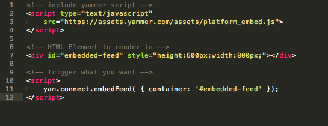
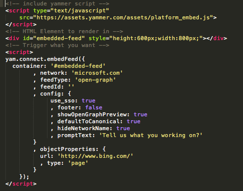

More info at https://developer.yammer.com/connect/.

Try out at: https://www.yammer.com/widget/configure/.
Docs at: https://developer.yammer.com/connect/#action-buttons
The JavaScript SDK enables you to use Yammer authentication and enrich your application with data from Yammer directly in your client application.
yam.connect.loginButton(
// You can specify a network here:
// {selector: "#yammer-login", network: "example.com"}
{selector: "#yammer-login"},
function (resp) {
if (resp.authResponse) {
console.log("Got auth back from login button.");
//logged in, might as well get current user.
getCurrentUser(function(user){
$('#hello').html("Welcome " + user.full_name);
});;
}
}
);yam.getLoginStatus({token: ''},
function(response) {
if (response.authResponse) {
console.log("Logged in and got code");
displayAuthResult(response.access_token);
}
else {
console.log("Not logged in. Going to login now.");
yam.platform.login(function (response) {
//prompt user to login and authorize your app, as necessary
if (response.authResponse) {
displayAuthResult(response.access_token);
}
});
}
}
);function getCurrentUser(callback) {
yam.platform.request({
url: "users/current.json",//this is one of many REST endpoints that are available
success: function (user) {
currentUser = user;
console.log("User request was successful.");
...
$('#authResult').html('User Result:
');
for (var field in user) {
$('#authResult').append(' ' + field + ': ' +
escape(user[field]) + '
');
}
},
error: function (user) {
console.error("There was an error with the request.");
}
});
}https://developer.yammer.com/restapi/